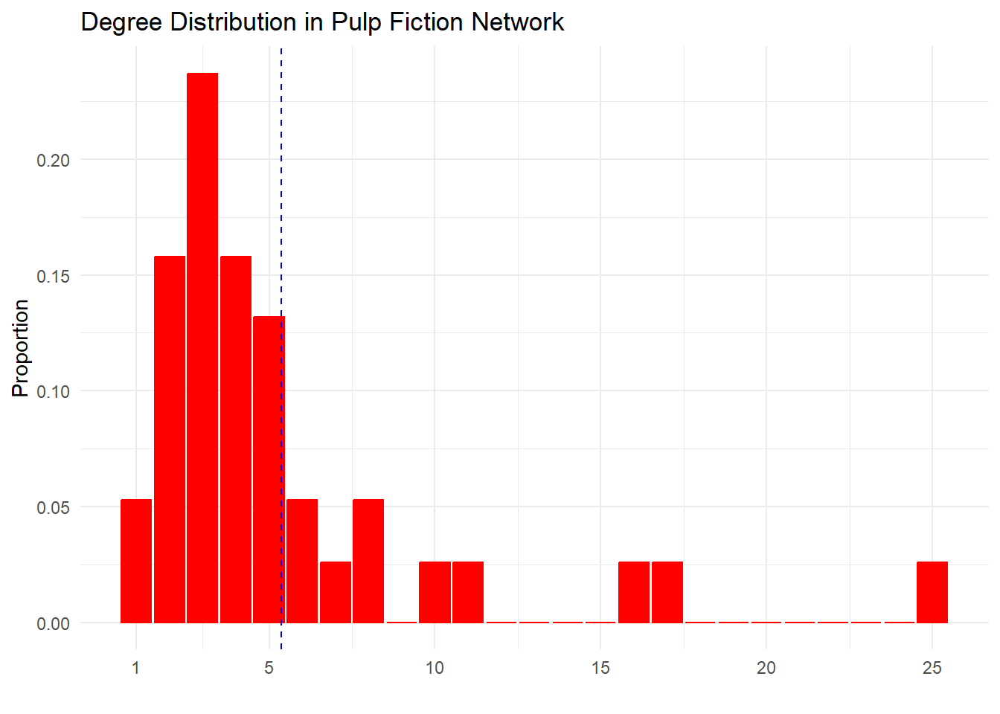

Basic Network Statistics
1 Loading Data
Here, we will analyze a small network and compute some basic statistics of interest. The first thing we need to do is get some data! For this purpose, we will use the package networkdata (available here). To install the package, use the following code:
To load the network datasets in the networkdata just type:
The package contains a bunch of human and animal social networks to browse through them, type:
We will pick one of the movies for this analysis, namely, Pulp Fiction. This is movie_559. In the movie network, two characters are linked by an edge if they appear in the same scene. The networkdata data sets come in igraph format, so we need to load that package (or install it using install.packages if you haven’t done that yet).
Code
# install.packages("igraph")
# install.packages("stringr")
library(igraph)
library(stringr) # using stringr to change names from all caps to title case
g <- movie_559 # assigning Pulp Fiction igraph network object
V(g)$name <- str_to_title(V(g)$name)
V(g)$name[which(V(g)$name == "Esmarelda")] <- "Esmeralda" # fixing misspelled name
E(g)$weight <- 1 # setting edge weights to 1.0 g <- movie_5592 Number of Nodes and Edges
We are now ready to compute some basic network statistics. As with any network, we want to know the numbers of nodes and edges (links). Since this is a relatively small network, we can begin by listing the actors.
+ 38/38 vertices, named, from 9e7cc7a:
[1] Brett Buddy Butch Capt Koons
[5] Ed Sullivan English Dave Esmeralda Fabienne
[9] Fourth Man Gawker #2 Honey Bunny Jimmie
[13] Jody Jules Lance Manager
[17] Marsellus Marvin Maynard Mia
[21] Mother Patron Pedestrian Preacher
[25] Pumpkin Raquel Roger Sportscaster #1
[29] Sportscaster #2 The Gimp The Wolf Vincent
[33] Waitress Winston Woman Young Man
[37] Young Woman Zed The function V takes the igraph network object as input and returns an igraph.vs object as output (short for “igraph vertex sequence”), listing the names (if given as a graph attribute) of each node. The first line also tells us that there are 38 nodes in this network.
The igraph.vs object operates much like an R character vector, so we can query its length to figure out the number of nodes:
The analog function for edges in igraph is E, which also takes the network object as input and returns an object of class igraph.es (“igraph edge sequence”) as output:
+ 102/102 edges from 9e7cc7a (vertex names):
[1] Brett --Marsellus Brett --Marvin
[3] Brett --Roger Brett --Vincent
[5] Buddy --Mia Buddy --Vincent
[7] Brett --Butch Butch --Capt Koons
[9] Butch --Esmeralda Butch --Gawker #2
[11] Butch --Jules Butch --Marsellus
[13] Butch --Pedestrian Butch --Sportscaster #1
[15] Butch --English Dave Brett --Fabienne
[17] Butch --Fabienne Fabienne --Jules
[19] Fourth Man --Jules Fourth Man --Vincent
+ ... omitted several edgesThis tells us that there are 102 edges (connected dyads) in the network. Some of these include Brett, Marsellus, Fabienne, and Jules, but not all can be listed due to space constraints.
igraph also has two dedicated functions that return the number of nodes and edges in the graph in one fell swoop. They are called vcount and ecount and take the graph object as input:
3 Graph Density
Once we have the number of edges and nodes, we can calculate the most basic derived statistic in a network: the density (\(d(G)\)). Since the movie network is an undirected graph, the density is given by:
\[ d(G) = \frac{2m}{n(n-1)} \tag{1}\]
Where \(m\) is the number of edges and \(n\) is the number of nodes, or in our case:
Of course, igraph has a dedicated function called edge_density to compute the density too, which takes the igraph object as input:
4 Degree
The next set of graph metrics is based on the degree of the graph. We can list the graph’s degree set using the igraph function degree:
Brett Buddy Butch Capt Koons Ed Sullivan
7 2 17 5 2
English Dave Esmeralda Fabienne Fourth Man Gawker #2
4 1 3 2 3
Honey Bunny Jimmie Jody Jules Lance
8 3 4 16 4
Manager Marsellus Marvin Maynard Mia
5 10 6 3 11
Mother Patron Pedestrian Preacher Pumpkin
5 5 3 3 8
Raquel Roger Sportscaster #1 Sportscaster #2 The Gimp
3 6 2 1 2
The Wolf Vincent Waitress Winston Woman
3 25 4 3 5
Young Man Young Woman Zed
4 4 2 The degree function takes the igraph network object as input and returns a plain old R named vector (\(\mathbf{d}\)) with the names being the names attribute of the vertices in the network object.
Usually, we are interested in who the ” top nodes ” are in the network by degree (a kind of centrality). To figure that out, all we need to do is sort the degree set (to generate the graph’s degree sequence) and list the top entries:
Vincent Butch Jules Mia Marsellus
25 17 16 11 10
Honey Bunny Pumpkin Brett Marvin Roger
8 8 7 6 6
Capt Koons Manager Mother Patron Woman
5 5 5 5 5
English Dave Jody Lance Waitress Young Man
4 4 4 4 4
Young Woman Fabienne Gawker #2 Jimmie Maynard
4 3 3 3 3
Pedestrian Preacher Raquel The Wolf Winston
3 3 3 3 3
Buddy Ed Sullivan Fourth Man Sportscaster #1 The Gimp
2 2 2 2 2
Zed Esmeralda Sportscaster #2
2 1 1 Line 1 stores the degrees in an object “d”, line 2 creates a “sorted” version of the same object (from bigger to smaller), and line 3 shows the elements of the sorted degree sequence.
We can also compute the degrees directly from the graph’s adjacency matrix (\(\mathbf{A}\)). This is a matrix listing the nodes in the rows and columns, with entries equal to 1 if the row and column nodes are adjacent in the graph, and 0 otherwise.
In R, we can use the igraph to obtain such a matrix from the graph object g by using the function as_adjacency_matrix (coerced to a regular matrix object in R using the as.matrix wraparound):
The row or column sums (in the undirected graph case) give us the degree vector:
Brett Buddy Butch Capt Koons Ed Sullivan
7 2 17 5 2
English Dave Esmeralda Fabienne Fourth Man Gawker #2
4 1 3 2 3
Honey Bunny Jimmie Jody Jules Lance
8 3 4 16 4
Manager Marsellus Marvin Maynard Mia
5 10 6 3 11
Mother Patron Pedestrian Preacher Pumpkin
5 5 3 3 8
Raquel Roger Sportscaster #1 Sportscaster #2 The Gimp
3 6 2 1 2
The Wolf Vincent Waitress Winston Woman
3 25 4 3 5
Young Man Young Woman Zed
4 4 2 Brett Buddy Butch Capt Koons Ed Sullivan
7 2 17 5 2
English Dave Esmeralda Fabienne Fourth Man Gawker #2
4 1 3 2 3
Honey Bunny Jimmie Jody Jules Lance
8 3 4 16 4
Manager Marsellus Marvin Maynard Mia
5 10 6 3 11
Mother Patron Pedestrian Preacher Pumpkin
5 5 3 3 8
Raquel Roger Sportscaster #1 Sportscaster #2 The Gimp
3 6 2 1 2
The Wolf Vincent Waitress Winston Woman
3 25 4 3 5
Young Man Young Woman Zed
4 4 2 The degrees can also be expressed in “matrix form” as the (matrix) product of the adjacency matrix times the all ones column vector (\(\mathbf{e}\)) of dimensions \(N \times 1\) (\(N\) rows and one column) where \(N\) is the number of nodes in the graph (the number of rows of \(\mathbf{A}\)):
\[ \mathbf{d} = \mathbf{A}\mathbf{e} \tag{2}\]
In R, we use the operator %*% to indicate matrix multiplication (after all, a column vector is just a matrix with one column):
Code
[,1]
Brett 7
Buddy 2
Butch 17
Capt Koons 5
Ed Sullivan 2
English Dave 4
Esmeralda 1
Fabienne 3
Fourth Man 2
Gawker #2 3
Honey Bunny 8
Jimmie 3
Jody 4
Jules 16
Lance 4
Manager 5
Marsellus 10
Marvin 6
Maynard 3
Mia 11
Mother 5
Patron 5
Pedestrian 3
Preacher 3
Pumpkin 8
Raquel 3
Roger 6
Sportscaster #1 2
Sportscaster #2 1
The Gimp 2
The Wolf 3
Vincent 25
Waitress 4
Winston 3
Woman 5
Young Man 4
Young Woman 4
Zed 2Note that the matrix operation above returns \(\mathbf{d}\) as a column vector. If we wanted a row vector, we would instead compute:
\[ \mathbf{d} = \mathbf{e}^T\mathbf{A} \tag{3}\]
Where \(\mathbf{e}^T\) is the matrix transpose of the row vector \(\mathbf{e}\) (e.g., a row vector of dimensions \(1 \times N\)).
Which in R can be obtained as follows, using the base function t for the matrix transpose:
Code
Brett Buddy Butch Capt Koons Ed Sullivan English Dave Esmeralda Fabienne
[1,] 7 2 17 5 2 4 1 3
Fourth Man Gawker #2 Honey Bunny Jimmie Jody Jules Lance Manager Marsellus
[1,] 2 3 8 3 4 16 4 5 10
Marvin Maynard Mia Mother Patron Pedestrian Preacher Pumpkin Raquel Roger
[1,] 6 3 11 5 5 3 3 8 3 6
Sportscaster #1 Sportscaster #2 The Gimp The Wolf Vincent Waitress Winston
[1,] 2 1 2 3 25 4 3
Woman Young Man Young Woman Zed
[1,] 5 4 4 25 Degree-Based Graph Statistics
Because the degree vector “d” is just a regular old vector, we can use native R mathematical operations to figure out things like the sum, maximum, minimum, and average degree of the graph:
So the sum of degrees is 204, the maximum degree is 25 (belonging to Vincent), the minimum is one, and the average is about 5.4.
Note that these numbers recreate some well-known equalities in graph theory:
- The sum of degrees is twice the number of edges (the first theorem of graph theory):
- The average degree is just the sum of degrees divided by the number of nodes:
- The density is just the average degree divided by the number of nodes minus one, as explained here:
Some people also consider the degree variance of the graph a measure of inequality in connectivity within the system. It is equal to the average sum of square deviations of each node’s degree from the average:
\[ \mathcal{v}(G) = \frac{\sum_i (k_i - \bar{k})^2}{n} \tag{4}\]
This indicates that there is substantial inequality in the distribution of degrees in the graph (a graph with all nodes of equal degree would have zero variance).
6 The Degree Distribution in Undirected Graphs
Another way of looking at inequalities of degrees in a graph is to examine its degree distribution. This gives us the probability of observing a node with a given degree k in the graph.
[1] 0.000 0.053 0.158 0.237 0.158 0.132 0.053 0.026 0.053 0.000 0.026 0.026
[13] 0.000 0.000 0.000 0.000 0.026 0.026 0.000 0.000 0.000 0.000 0.000 0.000
[25] 0.000 0.026The igraph function degree_distribution just returns a numeric vector of the same length as the maximum degree of the graph plus one. In this case, that’s a vector of length 25 + 1 = 26. The first entry gives us the proportion of nodes with degree zero (isolates), the second the proportion of nodes of degree one, and so on up to the graph’s maximum degree.
Since there are no isolates in the network, we can ignore the first element of this vector to get the proportion of nodes of each degree in the Pulp Fiction network. To that, we first create a two-column data.frame with the degrees in the first column and the proportions in the second:
Code
degree prop
1 1 0.053
2 2 0.158
3 3 0.237
4 4 0.158
5 5 0.132
6 6 0.053
7 7 0.026
8 8 0.053
9 9 0.000
10 10 0.026
11 11 0.026
12 12 0.000
13 13 0.000
14 14 0.000
15 15 0.000
16 16 0.026
17 17 0.026
18 18 0.000
19 19 0.000
20 20 0.000
21 21 0.000
22 22 0.000
23 23 0.000
24 24 0.000
25 25 0.026Of course, a better way to display the degree distribution of a graph is via some kind of data visualization, particularly for large networks where a long table of numbers is just not feasible. To do that, we can call on our good friend ggplot:
Code
# install.packages(ggplot2)
library(ggplot2)
p <- ggplot(data = deg.dist, aes(x = degree, y = prop))
p <- p + geom_bar(stat = "identity", fill = "red", color = "red")
p <- p + theme_minimal()
p <- p + labs(
x = "", y = "Proportion",
title = "Degree Distribution in Pulp Fiction Network"
)
p <- p + geom_vline(
xintercept = mean(d),
linetype = 2, linewidth = 0.5, color = "blue"
)
p <- p + scale_x_continuous(breaks = c(1, 5, 10, 15, 20, 25))
p
The plot clearly shows that the Pulp Fiction network degree distribution is skewed, with a small number of characters having large degrees \(k \geq 15\) while most other characters have small degrees \(k \leq 5\), indicating inequality in connectivity within the system.
7 The Degree Correlation
Another overall network statistic we may want to know is the degree correlation (Newman 2002). How do we compute it? Imagine taking each edge in the network and creating two degree vectors, one based on the degree of the node at one end and the other on the degree of the node at the other. Then the degree assortativity coefficient is just the Pearson product-moment correlation between these two vectors.
Let’s see how this would work for the Pulp Fiction network. First, we need to extract an edge list from the graph:
[,1] [,2]
[1,] "Brett" "Marsellus"
[2,] "Brett" "Marvin"
[3,] "Brett" "Roger"
[4,] "Brett" "Vincent"
[5,] "Buddy" "Mia"
[6,] "Buddy" "Vincent" We can see that the as_edgelist function takes an igraph network object as input and returns an \(E \times 2\) matrix, where \(E = 102\) is the number of rows. Each column of the matrix records the name of the node on each end of the edge. So the first row of the edge list, with entries “Brett” and “Marsellus,” indicates that there is an edge linking Brett and Marsellus, and so forth for each row.
To compute the correlation between the degrees of each node, all we need to do is attach the corresponding degrees to each name for each of the columns of the edge list, which can be done via data wrangling magic from the dplyr package (part of the tidyverse):
Code
# install.packages(dplyr)
library(dplyr)
d <- degree(g)
deg.dat <- data.frame(name1 = names(d), name2 = names(d), d)
el.temp <- data.frame(name2 = g.el[, 2]) %>%
left_join(deg.dat, by = "name2") %>%
dplyr::select(c("name2", "d")) %>%
rename(d2 = d)
d.el <- data.frame(name1 = g.el[, 1]) %>%
left_join(deg.dat, by = "name1") %>%
dplyr::select(c("name1", "d")) %>%
rename(d1 = d) %>%
cbind(el.temp)
head(d.el) name1 d1 name2 d2
1 Brett 7 Marsellus 10
2 Brett 7 Marvin 6
3 Brett 7 Roger 6
4 Brett 7 Vincent 25
5 Buddy 2 Mia 11
6 Buddy 2 Vincent 25Line 3 creates a two-column data frame called “deg.dat” with as many rows as there are nodes in the network. The first two columns contain the names of each node (identically listed with different names), and the third column contains the corresponding node’s degree.
Lines 4-7 use dplyr functions to create a new object “el.temp” by joining the degree information to each node name in the second position of the original edge list “g.el,” and renaming the imported degree column “d2.”
Lines 8-12 do the same for the nodes listed in the first position of the original edge list, rename the imported degree columns to “d1,” and bind the columns of the “el.temp” object to the new object “d.el.” The resulting object has four columns: two for the names of the nodes incident to each edge in the edge list (columns 1 and 3), and two for the degrees of the corresponding nodes (columns 2 and 4).
We can see from the output of the first few rows of the “d.el” object that indeed “Brett” is assigned a degree of 7 in each row of the edge list, “BUDDY” a degree of 2, “Marsellus” a degree of 10, “Vincent” a degree of 25, and so forth.
Now, to compute the degree correlation in the network, all we need to do is call the native R function cor on the two columns from “d.el” that contain the degree information. Note that because each degree appears twice at the end of each edge in an undirected graph (as both “sender” and “receiver”), we need to double each column by appending the other degree column at the end. So the first degree column is the vector:
And the second degree column is the vector:
And the graph’s degree correlation (Newman 2003) is just the Pearson correlation between these two degree vectors:
The result \(r_{deg} = -0.29\) tells us that there is anti-correlation by degree in the Pulp Fiction network. That is, high-degree characters tend to appear with low-degree characters, or conversely, high-degree characters (like Marsellus and Jules) don’t appear together very often.
If you hate dplyr (and some people do with a passion), here’s a relatively quick way to do the same thing without it:
Code
A <- as.matrix(as_adjacency_matrix(g))
dat <- data.frame(
e = as.vector(A), # vectorized version of adjacency matrix
rd = rep(rowSums(A), ncol(A)),
cd = rep(colSums(A), each = nrow(A)),
rn = rep(rownames(A), ncol(A)),
cn = rep(colnames(A), each = nrow(A))
)
cor(dat[dat$e == 1, ]$rd, dat[dat$e == 1, ]$cd)[1] -0.2896427Of course, igraph has a function called assortativity_degree that does all the work for us:
8 The Average Shortest Path Length
The final statistic people use to characterize networks is the average shortest path length. In a network, even non-adjacent nodes could be indirectly connected to other nodes via a path of some length (\(l > 1\)). So it is useful to know what the average of this quantity is across all dyads in the network.
To do that, we first need to compute the length of the shortest path \(l\) for each pair of nodes in the network (also known as the geodesic distance). Adjacent nodes get an automatic score of \(l = 1\). In igraph, this is done as follows:
Brett Buddy Butch Capt Koons Ed Sullivan English Dave Esmeralda
Brett 0 2 1 2 2 2 2
Buddy 2 0 2 2 2 2 3
Butch 1 2 0 1 2 1 1
Capt Koons 2 2 1 0 2 2 2
Ed Sullivan 2 2 2 2 0 2 3
English Dave 2 2 1 2 2 0 2
Esmeralda 2 3 1 2 3 2 0The igraph function distances takes a network object as input and returns the desired shortest-path matrix. So, for instance, Brett is directly connected to Butch (they appear in a scene together) but indirectly connected to Buddy via a path of length two (they both appear in scenes with common neighbors, even if they don’t appear together).
The maximum distance between two nodes in the graph (the longest shortest path to put it confusingly) is called the graph diameter. We can find this out simply by using the native R function for the maximum on the shortest paths matrix:
This means that in the Pulp Fiction network, the maximum degree of separation between two characters is a path of length 5.
Of course, we can also call the igraph function diameter:
Once we have the geodesic distance matrix, it is easy to calculate the average path length of the graph:
First (line 1), we sum all the rows (or columns) of the geodesic distance matrix. This vector (of length equal to the number of nodes) gives us the sum of the geodesic distances from each node to every other node (we will use this to compute closeness centrality later).
Then (line 2) we divide this vector by the number of nodes minus one (to exclude the focal node) to create a vector of the average distance of each node to each of the other nodes.
Finally (line 3), we take the average across all nodes of this average distance vector to get the graph’s average shortest path length, which in this case equals L = 2.33.
This means that, on average, each character in Pulp Fiction is separated by a little less than three contacts in the co-appearance network (a fairly small world).
Of course, this can also be done in just one step on igraph:
9 Putting it all Together
Now we can put together all the basic network statistics we have computed into a summary table, like the ones here. We first create a vector with the names of each statistic:
Then we create a vector with the values:
We can then put these two vectors together into a data frame:
We can then use the package kableExtra (a nice table maker) to create a nice HTML table:
Code
| Stat | Value |
|---|---|
| Nodes | 38.00 |
| Edges | 102.00 |
| Min. Degree | 1.00 |
| Max. Degree | 25.00 |
| Avg. Degree | 5.37 |
| Degree Corr. | -0.29 |
| Diameter | 5.00 |
| Avg. Shortest Path Length | 2.33 |